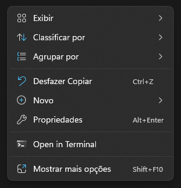
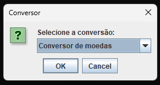

Para executar o arquivo .jar
Siga as instruções abaixo com atenção para abrir o arquivo no Windows:
- Após fazer o download do arquivo executável .jar, abra a pasta em que ele foi baixado no seu computador. Geralmente esta pasta é a de Downloads.
-
Caso você não tenha o Java instalado na sua máquina acesse esse site e faça o download do Java.
Se você tiver certeza que tem o Java instalado, pule para o passo 4. -
Caso você não saiba se instalou ou não, abra o CMD e digite:
Caso apareça algo como o código abaixo significa que você tem o Java instalado:
java --versionjava 17.0.4.1 2022-08-18 LTS Java(TM) SE Runtime Environment (build 17.0.4.1+1-LTS-2) Java HotSpot(TM) 64-Bit Server VM (build 17.0.4.1+1-LTS-2, mixed mode, sharing) - Dentro da pasta, clique com o botão direito do mouse para aparecer o menu fluante do Explorador de Arquivos: 
- No menu clique na opção "Abrir no Terminal" e o Power Shell ou o CMD deverá ser aberto.
-
Dentro do Terminal, digite a instrução:
E o programa deverá ser aberto: 
java -jar conversor.jar
E assim o conversor pode ser usado.
É importante lembrar que todas as vezes que você fechar o conversor e desejar usá-lo depois, será necessário seguir a partir do passo 4.
- Resumindo
- Baixe o arquivo executável
- É preciso ter o Java instalado no computador
- Entre na pasta em que o executável foi baixado e abra o Terminal por lá
- Dê o comando:
java -jar conversor.jar
Conversões suportadas
- Entre moedas
- De Real para Euro
- De Real para Libra
- De Real para Dólar Americano
- De Real para Yene
- De Real para Dólar Australiano
- Entre medidas
- Quilômetros para Metros
- Quilômetros para Centímetros
- Metros para Quilômetros
- Metros para Centímetros
- Centímetros para Quilômetros
- Centímetros para Metros
- Entre unidades de temperatura
- Celsius para Kelvin
- Celsius para Fahrenheit
- Kelvin para Celsius
- Kelvin para Fahrenheit
- Fahrenheit para Celsius
- Fahrenheit para Kelvin